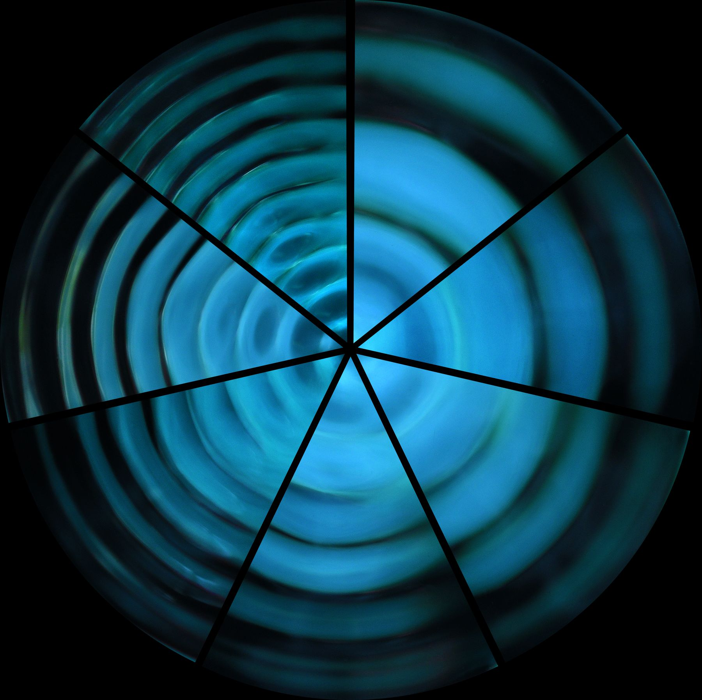
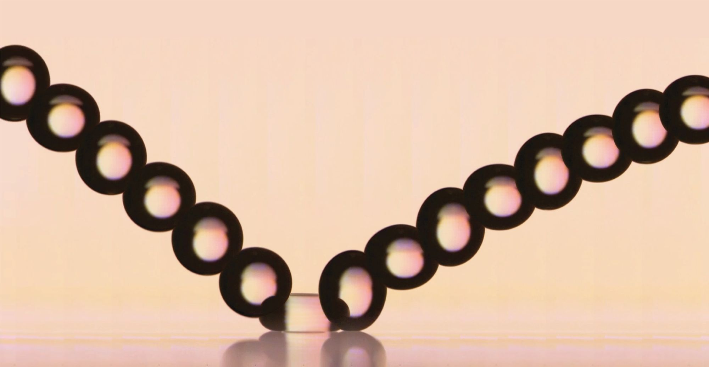
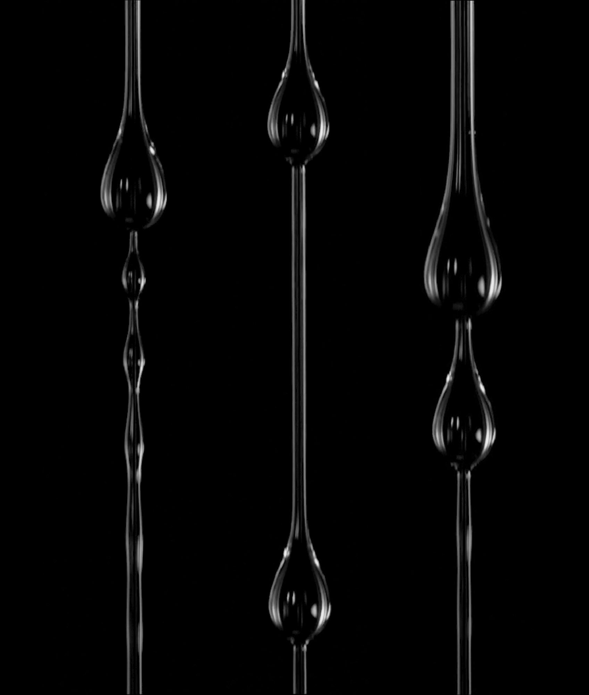
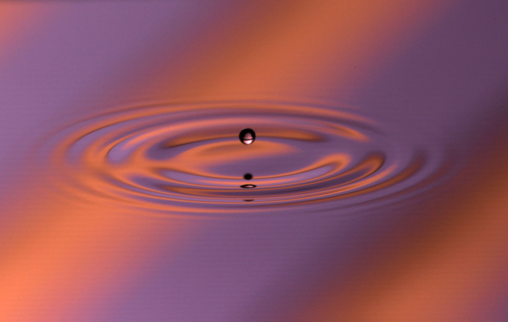
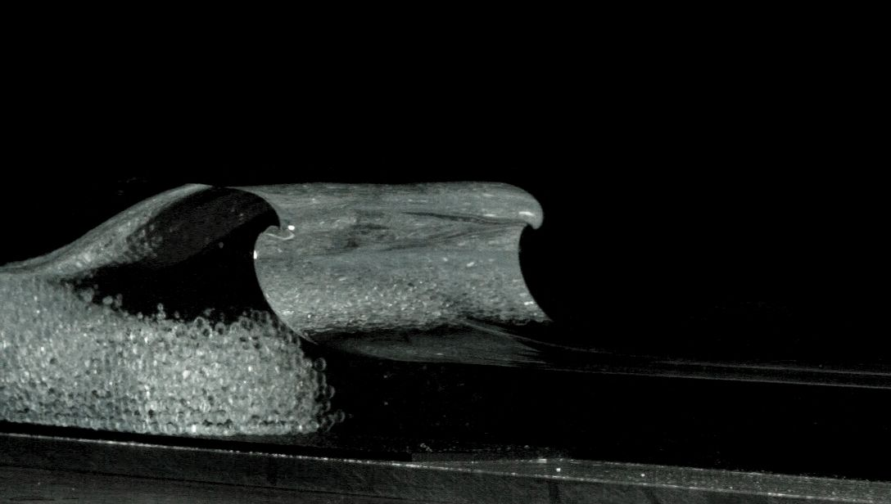
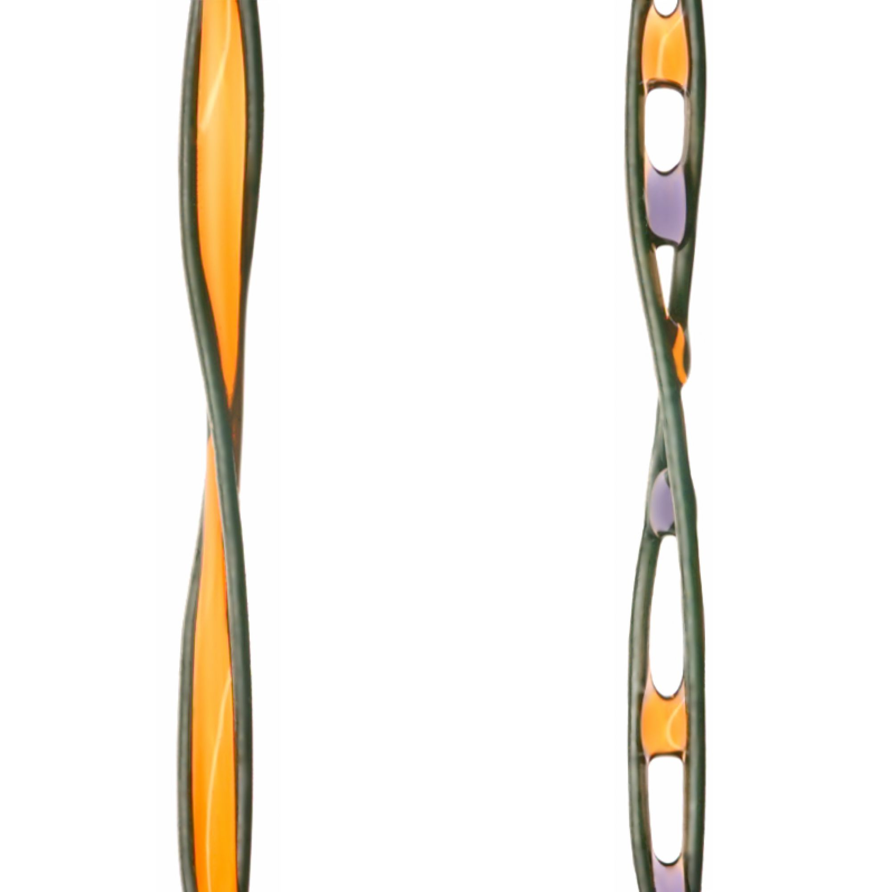
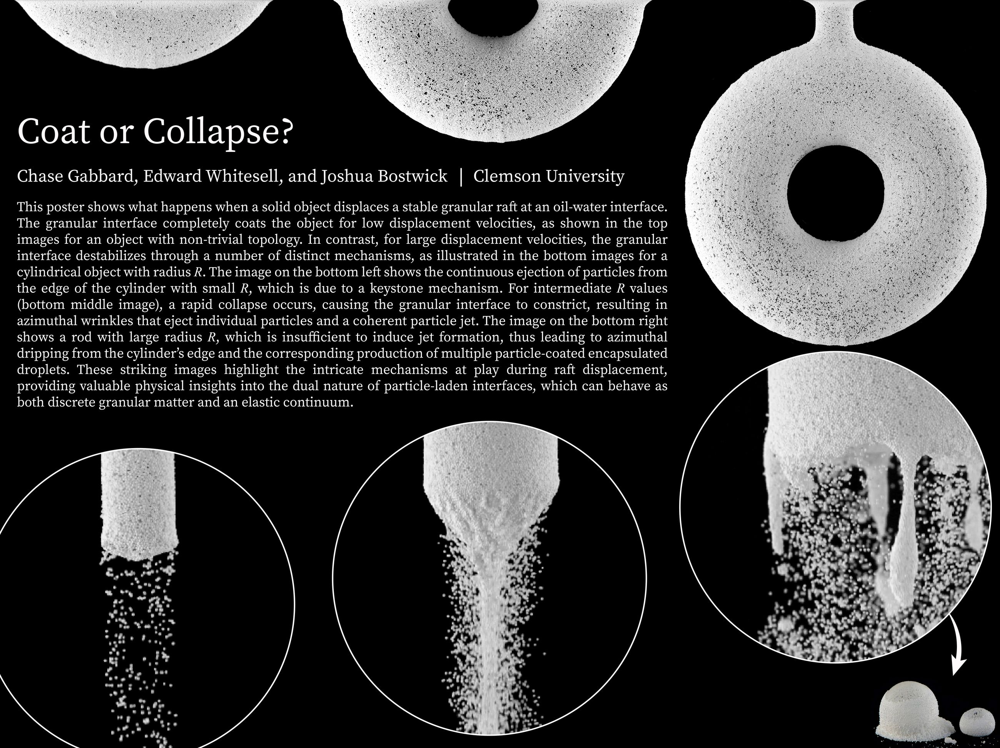
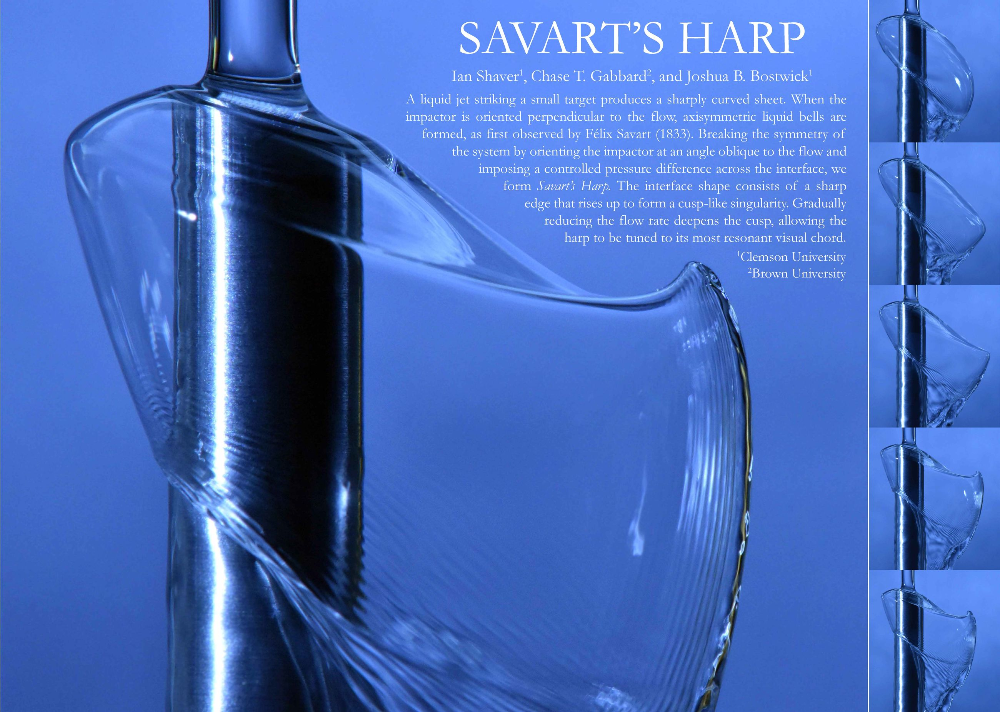

Gallery
Images, videos, and posters from our experiments, including award-winning entries to the American Physical Society’s Gallery of Fluid Motion. Select any image to see it larger.
Images













Videos
Wavy water entry: it’s just a phase
Posters



